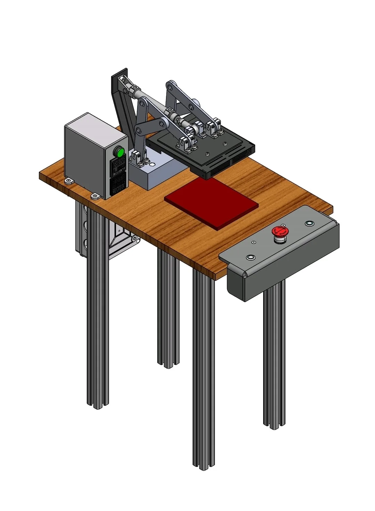
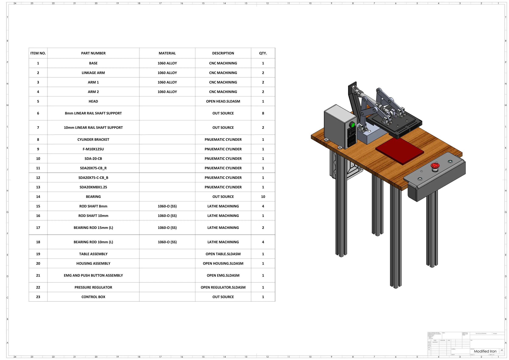
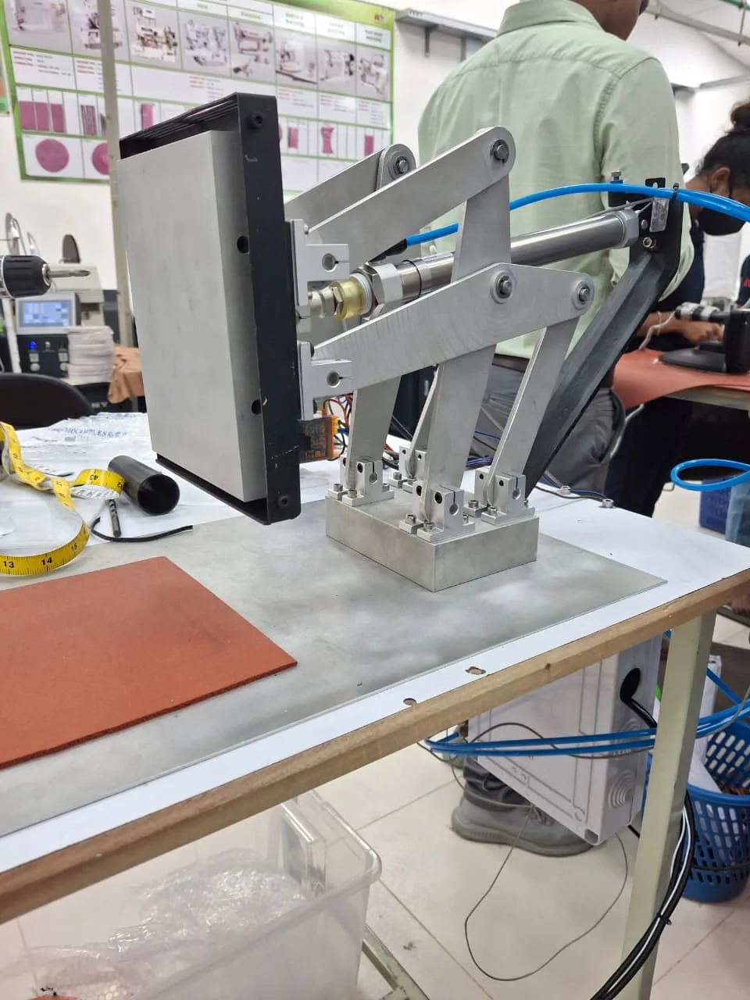
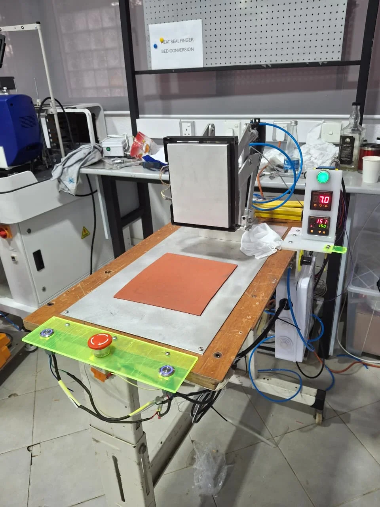

Mechanical system
A multi-link arm translates cylinder motion into controlled movement of the heated head.
Industrial automation, MAS Capital internship
A pneumatic pre-heating workstation developed to make a garment-production step more consistent and eliminate repetitive manual handling.

Create a practical workstation that could pre-heat garment components consistently before pressing, while fitting the factory production line and remaining straightforward for operators to handle.
The solution combined a guided linkage arm, pneumatic cylinder actuation, digital temperature and timing PID controls, a heat-resistant working surface, and accessible operator controls.
“Converting manual pressing into a guided pneumatic stroke controlled the three hardest variables to repeat by hand: travel kinematics, heating temperature, and dwell time.”
A multi-link arm translates cylinder motion into controlled movement of the heated head.
A compact cylinder and air-control hardware provide repeatable motion for the pressing cycle.
Temperature and timing controls coordinate the thermal process and cycle behavior.
Push buttons, emergency stop and visible controllers support day-to-day operation and adjustment.
The design focused on controlling the three variables that were difficult to repeat manually: the iron’s movement, heating temperature and contact time.
A pneumatic linkage was selected because it could provide a compact, repeatable stroke using the factory air supply. The linked arm guided the heated head toward the working surface while keeping the actuator away from the hot zone. Separate temperature and timer controls allowed the process settings to be adjusted without changing the mechanism, while the emergency stop and accessible push buttons kept operation direct.
The mechanism converts the cylinder stroke into guided movement of the iron and supports the heated head at several pivot points.
Pneumatic actuation suited the available industrial environment and provided adjustable, repeatable movement with a compact cylinder.
Independent time and temperature adjustment made the thermal cycle easier to tune for practical production trials.
The SolidWorks assembly helped establish the travel envelope, pivot locations, component clearances and workstation layout before fabrication.
The updated SolidWorks package separates the mechanism, heated tooling, workstation, controls and pneumatic hardware. This made component ownership, fabrication routes and final assembly relationships easier to communicate.
CNC-machined base and linkage arms, guided by shafts, supports and bearings.
A machined heating head is integrated with sourced cast-iron covers and holder.
Timer, temperature controller, push buttons and emergency stop are packaged for direct access.
The table, pneumatic cylinders, regulator and gauge complete the operating station.
The BOM was used as a manufacturing plan, not only a parts list.
Custom load-bearing and motion parts were assigned to machining, while enclosure and interface parts used faster polymer processes. Standard controls, bearings and pneumatic hardware were sourced so development effort stayed focused on the geometry unique to the workstation.
1060 alloy base, linkage arms and heating head.
8 mm and 10 mm shafts plus the longer bearing rods.
ABS front, rear and top sections of the control housing.
ABS-PC holders for the operator controls and pressure regulator.
Cylinders, bearings, rail supports, buttons, regulator, gauge and controllers.
Head, housing, controls, regulator and table were documented independently before top-level integration.
The top-level sheet records all 23 assembly items alongside the coordinated workstation model. Open the PDF to inspect the full-resolution BOM and assembly view.

Each sheet isolates a functional part of the workstation and links its visual assembly to a concise BOM.

